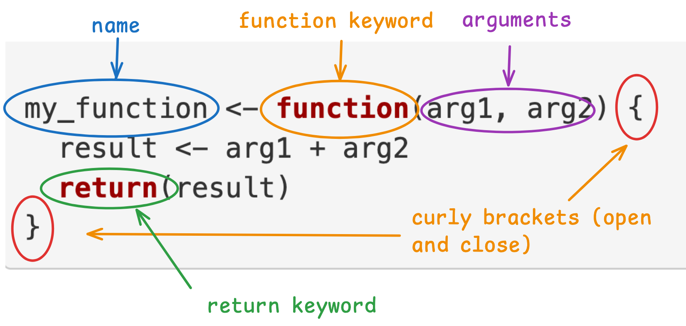

# Basic function structure
my_function <- function(arg1, arg2) {
result <- arg1 + arg2
return(result)
}Optional: Writing Functions in R
Writing Functions
Objectives
Understand the structure and purpose of functions in R.
Develop skills in writing functions in R.
Why Do We Use Functions?
Functions are a way of writing code that reduces the repetition of your code. They are a way to avoid copying and pasting bits of code throughout your script. To quote Hadley Wickham (creator of tidyverse):
“One of the best ways to improve your reach as a data scientist is to write functions. Functions allow you to automate common tasks in a more powerful and general way than copy-and-pasting. Writing a function has four big advantages over using copy-and-paste.”
His 4 big advantages are:
You can give a function an evocative name that makes your code easier to understand.
As requirements change, you only need to update code in one place, instead of many.
You eliminate the chance of making incidental mistakes when you copy and paste (i.e. updating a variable name in one place, but not in another).
It makes it easier to reuse work from project-to-project, increasing your productivity over time.
How do I know when to write a function?
“A good rule of thumb is to consider writing a function whenever you’ve copied and pasted a block of code more than twice (i.e. you now have three copies of the same code)”
Attribution: “R for Data Science: Functions” by Hadley Wickham is licensed under CC BY-NC-ND 3.0 US
Anatomy of a Function
Ok, but what does a function look like? Here is a simple example:
Let’s break it down into the key parts:
name of the function. This is usually a verb, because functions ‘do’ things.
function is a keyword in R and is required to create a function.
arguments (also known as parameters but let’s not get too scientific) are values that are ‘passed in’ to the function.
curly brackets define the body of the function. This is a black box world that has access to the arguments that are passed in.
return keyword defines what the output should be. (But as we’ll see, we don’t actually need it!)

Input and Output
So the arguments of a function are the input and the return keyword defines the output.
A washing machine is a good metaphor. Let’s say the washing machine is the function - a black box so to speak. The laundry and detergent are the inputs and the clean laundry is the output.
Implicit Returns
Usually in R, we skip the return keyword and the function knows to return the last thing that was defined within in. So our example above would become:
# Implicit return
my_function <- function(arg1, arg2) {
result <- arg1 + arg2
}We could even skip the aassignemt to the result variable. Hence our function becomes:
# Implicit return
my_function <- function(arg1, arg2) {
arg1 + arg2
}This still behaves the same way but we have removed the return statement and the variable assignment. The result value will be returned because it is the last thing that is defined in the function body. This means less code. Yay!
Defining & Running Functions
When you define a function, you’re saying to R “please read this piece of code (the function) and store it for later use”.
When you run a function, you are asking it to execute. Let’s write an example in RStudio.
NOTE: “call”, “run”, “execute” and “invoke” are all words for the same thing.
If you haven’t already, create a new project or use the project you are currently in. Create a new R Markdown file and save it as my_functions.Rmd.
Write the following code in a code chunk:
calculate_area <- function(length, width) {
length * width
}What do you notice when you run this code?
Nothing happens! You will however, find our function definition in the Environment tab. That means, our function has been defined.
The key thing about functions is that we define them once but can call them many times.
Let’s add some code to call our function.
# AS BEFORE
calculate_area <- function(length, width) {
length * width
}
# Run the function
calculate_area(50, 10) # ADDEDIn this case, we ask R to call the function with the values 50 for length and 10 for width.
Execute the code by clicking the “Source” button. What did you expect to happen? Given the arguments 50 and 10, you might have expected to see 500 output somewhere because the calculate_area function multiplies length and width and returns the area.
In fact, the function has done this but the return value (i.e. 500) has been lost because we haven’t done anything with the return value.
Let’s fix this:
# AS BEFORE
calculate_area <- function(length, width) {
length * width
}
# Run the function
area <- calculate_area(50, 10) # NEW
area # NEWSuccess! You will see that 500 has been printed in the console. Try adding some more function calls to your script:
# ... AS BEFORE
large_area <- calculate_area(2020, 900) # NEW
print(large_area) # 1818000
small_area <- calculate_area(2, 2) # NEW
small_area # 4Practice writing your own functions
Define a function called add_two_numbers() that takes two arguments, adds them together, and returns the result. Remember to call the function and print out the result!
Define a function called square_number() that takes a single argument and returns its square.
Define a function called is_even() that takes one argument, checks if the number is even or odd, and returns TRUE for even numbers and FALSE for odd numbers. HINT use the modulo operator %%.
A note on default arguments
Consider the following code:
happy_birthday <- function(input = "you") {
paste0("Happy birthday to ", input)
}
happy_birthday()What do you hypothesise this code will do when we run it? Run the code and see if you are right.
Notice that when we called the function happy_birthday() we didn’t pass in any arguments. We can either pass in an argument or we can skip it. If we skip it, it will default to “you”. But if we pass in an argument, the input will be assigned that value instead.
happy_birthday("Zaphod") # Happy birthday to ZaphodKey Takeaways
Functions in R help reduce code repetition, improve readability, and minimise errors by allowing you to encapsulate common tasks into reusable blocks of code.
Naming functions descriptively (usually as verbs) makes the purpose of your code clearer. Well-named functions improve the understanding and maintainability of your code.
Inputs (arguments) are passed into functions, and outputs are returned. You can use a function like a “black box” that processes inputs and produces outputs, similar to how a washing machine takes in laundry and detergent and returns clean laundry.
Return values can be specified explicitly using return() but we usually omit the return keyword.
Function definitions store code to be run later, and once defined, the function can be called multiple times with different inputs.
Default arguments allow flexibility in function calls, providing default values when no input is given, but allowing custom inputs when needed.
Applying Functions
Objectives
Know how to apply functions in several contexts
Develop skills writing vector functions and data frame functions
Now that we’ve understood the basic structure of functions, let’s apply this knowledge to more practical contexts.
Vector Functions
Vector functions take one or more vectors as arguments and return a vector. Let’s look at an example:
add_vectors <- function(vec1, vec2) {
vec1 + vec2
}
# Example usage:
v1 <- c(1, 2, 3)
v2 <- c(4, 5, 6)
sum_vector <- add_vectors(v1, v2)
sum_vector # c(5, 7, 9)In this example, the function is called add_vectors and it takes 2 arguments. The return value is the sum of the vectors.
We call the function and pass in v1 and v2. The result is c(5, 7, 9)
A More Complex Example
In this example we’ll tackle the following problem:
Given a vector of peoples birthdates, write a function to compute their age in years.
What steps do we need to create a function?
A function name. It should be a verb so let’s call it get_ages
Define the arguments. In this case we will have one argument. It should be a noun so let’s call it birth_dates
The body of the function. This is the code between the curly brackets that does some work and returns a value. In this case, calculate ages.
get_ages <- function(birth_dates) {
# TODO: calculate ages
}Try defining and calling this function yourself. Give it a go! Then check the solution.
HINT: Load the lubridate library so you can use the now() and interval() functions.
Solution
library(lubridate)
get_ages <- function(birthdates) {
birthdates_as_dates <- as.Date(birthdates)
todays_date <- now()
ages <- interval( birthdates_as_dates, todays_date ) / years(1)
return( floor(ages) )
}
example_birthdates <- c("2001-02-19", "1972-02-18")
# run, execute, call
get_ages(example_birthdates) # 23 52
# Note: The body of your function might be slightly different to this solution but might achieve the same thing. There's no one answer in coding! The key thing is to understand how functions work.Question: Think about how you would explain the two variables example_birthdates and birthdates to another person.
Solution: One possible way to explain them is: example_birthdates is the value that is passed in to the function get_ages. get_ages has an argument defined as birthdates.
Watch an example below of defining and running a function.
Video: Defining and running an age vector function (7:09)
Dataframe functions
Often, we find ourselves copying and pasting multiple dplyr verbs. For example, have you ever wanted to count() a variable and add a column to show the proportions?
# E.G.
df %>%
count(my_var) %>%
mutate(prop = n / sum(n))Let’s take an example. Consider the following code:
# https://x.com/Diabb6/status/1571635146658402309
# https://r4ds.hadley.nz/functions#common-use-cases
library(tidyverse)
count_prop <- function(df, var, sort = FALSE) {
df %>%
count({{ var }}, sort = sort) %>%
mutate(prop = n / sum(n))
}
# Call the function
diamonds %>% count_prop(clarity)
mpg %>% count_prop(model)Let’s break it down:
The function name is count_prop
The arguments are df, var and sort
The body of the function pipes the given dataframe into count and mutate and returns a dataframe (tibble)
When we call the function, we pipe in the dataframe (in this case diamonds and mpg) which will be the value of the df argument. clarity and model are variables that will become the value of var and sort is not passed into the function so the default value (FALSE) is used in the function body.
Basically, we’ve created our own custom dplyr style function. Nice!
Did you spot the weird curly braces around the var keyword? This is known as embracing. We need these in order to tell dplyr to use the value of the variable rather than the literal word ‘var’. In this example the values will be clarity and model. This can be a difficult concept to get your head around. You can read a further explanation here -> https://r4ds.hadley.nz/functions#indirection-and-tidy-evaluation
Can you think of other situations when you have thought “I wish there was a dplyr function that did x,y,z”? If so, try writing one!
More examples can be found here
Video: A closer look at “embracing”
A note on style
Thinking of good function names is not easy but it’s worth taking a few minutes to think about it before jumping to a name.
func1 or func2 are not good names because:
They are not descriptive of what they do.
They are not verbs.
There’s little, if any, value in making function (or indeed) variable names as short as possible. Longer and more descriptive is always better.
Examples of better names would be:
strip_white_space()
calculate_mean()
plot_histogram()
filter_data()
These are good examples because they are descriptive and action-oriented, telling you exactly what the function is intended to do.
Key Takeaways
Functions help you organize reusable code.
Vector functions: Operate on vectors and return vector outputs (e.g., add_vectors()).
Data frame functions: Combining dplyr functions (like count() and mutate()) into custom functions saves time and reduces redundancy (e.g., count_prop()).
Embracing: {{ }} is shorthand for embracing arguments in tidyverse functions. It allows you to pass column names or expressions as arguments in functions.
Good naming matters: Use descriptive, action-oriented names for functions to improve code readability and understanding.
Practice makes perfect: Developing your own functions, especially with clear names and focused tasks, makes your R coding more efficient and scalable.
Writing Custom Plotting Functions with ggplot2
Objectives
Learn how to encapsulate repetitive plotting tasks into functions.
Understand how to pass data and aesthetic mappings into custom ggplot2 functions.
Write flexible functions that allow for optional customisation of plots.
Plotting Functions with ggplot2
In ggplot2, you often find yourself writing similar code multiple times with only slight variations, such as changing the data or the variables being plotted. This can lead to copying and pasting code, which makes your script harder to manage and debug. Functions to the rescue! Can you see how functions can help you simplify your workflow, reduce errors and make your code easier to maintain?
Let’s look at an example. You can code along with these examples in a new R or markdown file, or use the file you created previously.
A Simple Scatter Plot Function
Let’s start by writing a function that returns a plot, given a dataset and any two variables.
# Load the ggplot2 library (or tidyverse)
library(ggplot2)
# Define a custom plotting function for scatter plots
scatter_plot <- function(df, x_var, y_var) {
df %>%
ggplot( aes(x = {{ x_var }}, y = {{ y_var }})) +
geom_point() +
theme_minimal() +
labs(title = paste("Scatter plot of", deparse(substitute(x_var)), "vs", deparse(substitute(y_var))))
}
# Example usage with built-in dataset
diamonds %>% scatter_plot(price, carat)(diamonds is a built-in dataset containing the prices and other attributes of almost 54,000 diamonds).
Remember, the double curly brackets around the x_var and y_var are to tell R to use the value of the variable. In this example the values will be price and carat.
Function Arguments:
df: The dataset to use.
x_var and y_var: The variables to plot on the x and y axes.
ggplot2 Aesthetic Mapping (aes): We use curly brackets {{ }} to pass the variables to the aes function, allowing us to pass column names directly.
Title Creation:
The deparse(substitute(x_var)) captures the variable name for the plot title.
Try using this function on another dataset of your choice. NOTE: You’ll have to load in the dataset or use a built-in one!
Customising our plot further
We can enhance the function by allowing more customisation, such as the colour of points and the size of the title.
# Load the ggplot2 library (or tidyverse)
library(ggplot2)
scatter_plot_custom <- function(df, x_var, y_var, colour = "blue", title_size = 14) {
df %>%
ggplot(aes(x = {{ x_var }}, y = {{ y_var }})) +
geom_point(colour = colour) +
theme_minimal() +
labs(title = paste("Scatter plot of", deparse(substitute(x_var)), "vs", deparse(substitute(y_var)))) +
theme(plot.title = element_text(size = title_size))
}
# Example usage with custom parameters
mtcars %>% scatter_plot_custom( wt, mpg, colour = "darkgrey", title_size = 16)Default Arguments: The colour and title_size arguments let the user modify the appearance of the plot without changing the core structure.
Default Values: If the user doesn’t specify a colour or title size, the function uses default values (“blue” for colour and 14 for title size).
A Histogram example
# Attribution: https://r4ds.hadley.nz/functions.html#plot-functions
histogram <- function(data, var, binwidth = NULL) {
data %>%
ggplot(aes(x = {{ var }})) +
geom_histogram(binwidth = binwidth)
}
diamonds %>% histogram(carat, 0.1)Further Examples: https://r4ds.hadley.nz/functions.html#plot-functions
Key Takeaways
By writing custom plotting functions:
You can reuse code, avoid repetitive work, and make your scripts cleaner and more flexible.
Plotting functions can be made more customisable by allowing arguments for anything you want to be made more flexible.